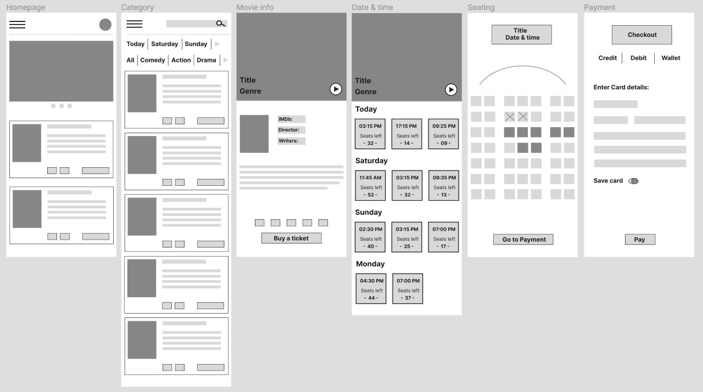

As part of the "Google UX Design Professional Certificate", I have been working on an ongoing project for a movie ticketing app. I have learned and applied principles and techniques to create user-centred design solutions throughout the course. So far, I have conducted user research, gathered and analysed data, and used these insights to create a digital prototype. My user research focused on identifying people's challenges when buying movie tickets and understanding how to simplify the experience. I achieved this through user interviews and personas. Additionally, I conducted a competitive analysis, examining four different cinema websites and mobile apps. I evaluated various aspects, such as product offerings, value propositions, first impressions, features, accessibility, user flow, navigation, visual design, and content. This allowed me to write an audit report, which included an analysis of competitor strengths and weaknesses, gaps in the market and potential opportunities. Continuing my research, I developed a user flow, a customer journey map, and a storyboard. By analysing user behaviour and preferences, I transformed these insights into a paper prototype and, eventually, a digital wireframe.

Read full case study in PDF:
View Case Study